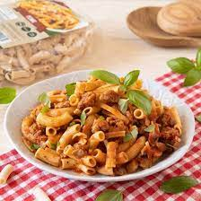

Protein Pasta

Protein pasta uses plant based protein noodles to maximize protein consumption.
The macros achieved in this recipe will optomize gains and leave you full and satisfied.
NOTE: You can substitue and adjust ingredients but make sure to update your macros!
Ingredients
Pasta Sauce
- Olive Oil
- Garlic
- Tomato Paste
- Hevay Cream
- Parmesan
Protein
200 grams 94/6 lean ground turkey
Seasoning
- 1 table spoon salt
- 1/2 tablespoon chilipowder
- 1/2 tablespoon onion powder
- 1/4 tablespoon paprika
Your Choice of Plant based pasta
2 servings of Barilla Lentil Pasta
Instructions
- Start by seasoning your choice of protein with the seasonings listed above. Make sure to thoroughly mix the seasoning within your protein
- On one stove, boil a pot of water; once water reaches a boil, put the pasta in and bring heat to a simmer. On another stove top sautee garlic until fragrant
- Once garlic has browned, put in tomato past and heavy cream and stir contents gently for about 5 minutes.
- After the 5 minutes, the pasta should be done. Pour the pasta into the sauce with a little bit of pasta water and mix. Gradually add parmasean as you mix. The pasta is now done.
- With a new pan cook your seasoned protein
- Once the protein is fully cooked, add to the pasta and enjoy!
Macros
Carbs:40 grams
Protein: 70 grams
Fat: 43grams
Calories: 840